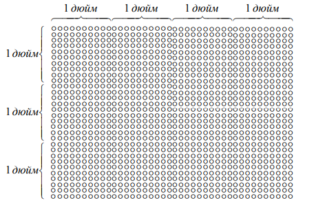

§ 4. Основные компоненты персонального компьютера
4.1. Системный блок
Главная часть современного персонального компьютера (ПК) — системный блок (рис. 7), который содержит самые главные части компьютера:
1) системную, или материнскую, печатную плату;
2) процессор, находящийся на этой плате и выполняющий основные вычисления компьютера, в том числе выполнение компьютерных программ;
3) оперативную память, также находящуюся на системной плате, тесно связанную с процессором и хранящей код выполняемых программ.
Рис. 7. Системный блок
На системной плате имеются также гнезда, или слоты, для подключения к компьютеру других устройств, находящихся вне системного блока.
На рис. 8 схематически изображена системная плата.
Рис. 8. Схематическое изображение системной платы
В системном блоке также находятся жесткий диск, дисковод для дискет и дисковод для компактов. Все устройства системного блока подключены к его блоку питания, соединенному с электрической сетью.
§ 5. Процессор и память
5.1. Процессор
Процессор, или ЦПУ (CPU) (рис. 9) — это «мозг» компьютера, большая интегральная микросхема, полупроводниковый кристалл, или просто «камень». Процессор выполняет арифметические операции с двоичными числами.
Главная характеристика процессора — частота — является основной характеристикой быстродействия компьютера. Величина частоты примерно соответствует количеству арифметических операций, выполняемых в секунду. Частота процессоров измеряется в единицах частоты — герцах — и ее производных. Современные процессоры ПК имеют частоты 2-4 гигагерца (Гг).
Рис. 9. Процессор
5.2. Оперативная память
С процессором непосредственно, функционально (самый быстрый обмен) и конструктивно (находятся на одной плате), связана оперативная, или временная, память (random access memory, RAM). Это память произвольного доступа.
Объем памяти современного ПК обычно 2-16 Гб или более.
В оперативной памяти компьютер хранит данные и программы, которые выполняет процессор. Эти программы и обрабатывают эти данные.
Однако информация, которую компьютер записывает во временную память, исчезает при его выключении.
Рис. 10. Оперативная память
5.3. Постоянная память
Для постоянного хранения информации используется постоянная память компьютера, находящаяся в системном блоке в виде отдельного устройства. Это устройство называется жесткий диск, или винчестер (hard disk drive, HDD). Информация, записанная на магнитной поверхности винчестера, в отличие от оперативной, хранится и после выключения компьютера.
Объем памяти современного винчестера обычно составляет 500Гб - 1Тб или более.
Для переноса информации между компьютерами используется флеш-накопитель, или внешний жёсткий диск. Современные «флешки» имеют объем от 2-32Гб. .
Рис. 11. Флеш-накопитель и HDD
5.4. Кластер
Информация на магнитных дисках записывается в виде очень узких концентрических колец, расположенных очень близко друг к другу. Эти узкие кольца разбиваются на маленькие сектора — минимальные единицы физической, аппаратной записи. Длина сектора строго фиксирована и обычно составляет 512 байт.
В свою очередь сектора объединяются в последовательные цепочки — кластеры — минимальные единицы, кванты логической, программной записи на магнитные диски. Длина кластера тоже фиксирована на одном диске, но эта величина зависит от его объема.
При записи информации на магнитный носитель место под нее выделяется покластерно: сначала информация записывается на один свободный кластер, если его не хватает — то выделяется второй, затем третий и т. д. до полной записи данных на диск.
Рис. 12. Кластер, разделённый на сектора

§ 6. Перифирия
Компьютерная периферия, или просто периферия,— это все компьютерные устройства, не входящие в состав системного блока(устройства ввода/вывода, адаптеры bluetooth, wifi, внешние накопители).
Устройство ввода — устройство, позволяющее вводить данные в компьютер или управлять им. Устройствами ввода являются клавиатура и мышь, которые управляют компьютером, а также сканер, микрофон и др.
Устройство вывода выводит информацию из компьютера, в том числе и для чтения человеком. Они мощнее устройств ввода, ведь компьютер больше отдает, чем получает. Это монитор, принтер, звуковые колонки и др.
Сигнальный кабель — кабель, по которому компьютерные устройства обмениваются информацией. Системный блок соединяется сигнальными кабелями со всей периферией, в том числе с клавиатурой и мышью (рис. 13).
С другими компьютерами компьютер соединяет сигнальный сетевой кабель (рис. 13) Этот кабель называется сетевым потому, что при связывании между собой компьютеры образуют компьютерная сеть, или просто сеть.
С питанием, т. е. с электрической сетью, системный блок и вообще любая аппаратура соединяется силовым кабелем (рис. 13).
Рис. 13. Схематическое изображение системного блока и периферии
6.1. Клавиатура и ASCII
Клавиатура (рис. 14) имеет более 100 клавиш, служащими для ввода текстов и управления компьютером. Клавиатуры в России — американские с нарисованными символами русского алфавита. Клавиатура может иметь несколько языковых раскладок, т. е. может использовать свои клавиши для ввода букв разных алфавитов: русского, английского и т. п.
Рассмотрим ASCII (см. гл. 1, § 2, п. 2). Они состоят из символов следующих трех групп.
1. Прописных (больших) и строчных (маленьких) букв современного латинского алфавита, содержащего 26 символов.
2. 10 цифр.
3. 33 знаков препинания и специальных знаков.
Всего получаем 26 × 2 + 10 + 33 = 95 символов. В кодовых таблицах они кодируются числами от 32 до 126 включительно: 126 – 31 = 95 (см. табл. 3).
На клавиатуре имеется 47 алфавитно-цифровых клавиш — буквы, цифры, знаки препинания и специальные символы. На каждой в режиме английского языка набирается по два символа, и вместе с клавишей пробела получаем эти же 95 символов: английский язык — это язык ASCII.
Рис. 14. Клавиатура
6.2. Мышь
Мышь (рис. 15), или манипулятор «мышь» — это устройство для управления компьютером и ввода данных. На экране монитора мыши соответствует указатель мыши, движение которого по экрану управляется движением мыши по коврику. Компьютером управляют, наводя указатель мыши на объект на экране и нажимая при этом различные кнопки на мыши.
Рис. 15. Компьютерная мышь
6.3. Монитор, пиксель
Монитор, или дисплей,— устройство вывода компьютером визуальных данных. На утомляемость глаз влияет частота обновления экрана, т е. количество кадров в секунду. Минимальная приемлемая частота 85 Гц.
Изображение на экране монитора состоит из цветных пикселей. Пиксель — это единица цвета монитора, точка-зерно, состоящая из точек трех цветов, в сумме дающих цвет пикселя.
6.4. Разрешение
Разрешение аппаратуры — количество точек на единицу длины, измеряемое по вертикали или горизонтали. В качестве длины всегда выступает американский дюйм, равный примерно 2,5 см. Обычно разрешение аппаратуры по обоим направлениям, горизонтали и вертикали, одинаковое, поэтому для обозначения разрешения используется только одно число.
Точка по-английски «dot», дюйм — «inch», точек на дюйм — «dot per inch», поэтому выражение «точек на дюйм» сокращается как «dpi»
Итак, разрешение — это характеристика картинки на плоскости. Схематически разрешение, например, 10 dpi для картинки 40 × 30 пикселей можно изобразить так, как показано на рис. 16.
Рис. 16. Схематическое изображение картинки 40 × 30 пикселей с разрешением 10 dpi 
6.5. Основные цвета монитора
Пиксель белого цвета состоит из 3 точек 3 цветов максимальной яркости:
красного (red), синего (blue) и зеленого (green)
— это основные цвета монитора
Каждый цвет обладать яркостью — силой свечения цвета. Если все три цвета имеет минимальную яркость, т. е. ее отсутствие, то на экране получается черный цвет, максимальную — ярко-белый. Чтобы получить в чистом виде один из трех основных цветов, нужно погасить остальные два.
6.5. Смешивание цветов монитора
Пары трех основных цветов максимальной яркости выглядят для человеческого глаза как следующие цвета (см. рис. 17):
фиолетовый (пурпурный, лиловый, магента, magenta) = красный + синий;
голубой (синезеленый, бирюзовый, циан, cyan) = синий + зеленый;
желтый (yellow) = красный + зеленый
Рис. 17. Схематическое изображение восприятия цвета глазом человека
6.6. Цветовая схема RGB
Для наглядного представления наложения цветов на мониторе рисуют внутри квадрата три пересекающихся круга, соответствующих трем основным цветам. Эти круги, пересекаясь, разбивают квадрат на 8 частей, каждая из которых соответствует одному из 8 цветов. Вне кругов, когда нет ни одного луча света, находится черный цвет. Все три круга пересекаются по белому цвету. Имеем цветовую схему монитора RGB, названную так по первым буквам английских названий трех основных цветов.
Рис. 18. RGB
§ 7. Сканер, принтер
7.1. Сканер, его виды
Сканер — устройство оптического ввода информации, ее сканирования, фотографирования, служащее для копирования картинок окружающей действительности в компьютер. При работе сканера в компьютере создается графический объект — копия реальной картинки.
Планшетный сканер (рис. 19) размещается на столе. При сканировании считывающее устройство перемещается вдоль планшета. При этом на стекло планшета кладется лист носителя или книга. При наличии дополнительной приставки возможна автоподача листов с изображениями.
Рис. 19. Планшетный сканер
Рулонный, или барабанный, сканер (Рис. 20) протягивает лист бумаги вдоль оптического считывателя, подобно принтеру. Только принтер печатает на бумаге, а рулонный сканер сканирует, фотографирует лист бумаги. В него можно вводить информацию с рулонного носителя или осуществлять автоподачу листов одного за другим.
Рис. 20. Рулонный сканер
Проекционный сканер (Рис. 21) снимает окружающие предметы, как фотоаппарат или телекамера. В отличие от предыдущих видов сканера в проекционном сканере нет движущихся частей. Цифровые камера и видеокамера представляют собой разновидности проекционного сканера.
Рис. 21. Проекционный сканер
Результатом цифрового сканирования является матрица из пикселей, расположенных равномерно по вертикали и горизонтали. Эта картинка имеет размеры и разрешение подобно изображению на экране монитора. Разрешение 600 пикселей на дюйм — минимальное для современного сканера.
7.2. Принтер, его виды
Принтер — устройство вывода информации, используемое для печати данных на твердом носителе — бумаге или пленке. (рис. 22)
Матричный принтер появился первым и назван в противоположность векторному устройству — графопостроителю, или плоттеру. Матричный принтер переносит изображение на бумагу, печатая точки, равномерно расположенные по вертикали и горизонтали. Графопостроитель рисует изображение специальными перьями, фломастерами.
Матричный принтер печатает стальными иголками, бьющими по пишущей ленте, пропитанной типографской краской. Поэтому его более правильное название — игольчатый принтер.
Затем появились лазерные принтеры, печатающие точками на твердом носителе (матричный принцип) при помощи мелкого черного порошка, который после нанесения на бумагу или пленку вплавляется в нее.
Струйные принтеры печатают краской разных цветов, которая точечными капельками (опять матричный принцип) напыляется на бумагу или другой твердый носитель, разбрызгиваясь через специальные микросопла. Минимальное разрешение современных принтеров — также 600 dpi.
Рис. 22. Принтер
7.3. Основные цвета при печати
Способ формирования цвета на бумаге при цветной печати отличается от формирования цвета на экране монитора. Более того, эти способы в некотором смысле противоположны, а именно: белый цвет на экране получается как смешивание всех трех цветов монитора, тогда как белый цвет на белой бумаге — это результат отсутствия на ней какой-либо краски.
В самых простых цветных принтерах имеется только три цвета:
голубой (cyan), фиолетовый (magenta) и желтый (yellow).
Эти три цвета и черный цвет — основные цвета цветной печати.
7.4. Особенности цветной печати
Обычно цветные принтеры имеют черный цвет для передачи черного цвета и темных тонов. Более качественные цветные принтеры имеют еще два цвета для светлых тонов: светло-голубой и светло-фиолетовый.
Печатные машины имеют много цветов. Черно-белые принтеры имеют только один цвет для печати — черный.
При печати насыщенность цвета достигается количеством печатаемых точек — плотностью цвета. При отсутствии цветных точек, т. е. при нулевой плотности цвета, на белой бумаге получается белый цвет. Небольшая плотность цвета при печати дает бледные цвета. Когда же все цветные точки выводятся, т. е. при максимальной плотности цвета, то даже на самых простых принтерах получается очень темный цвет, практически черный.